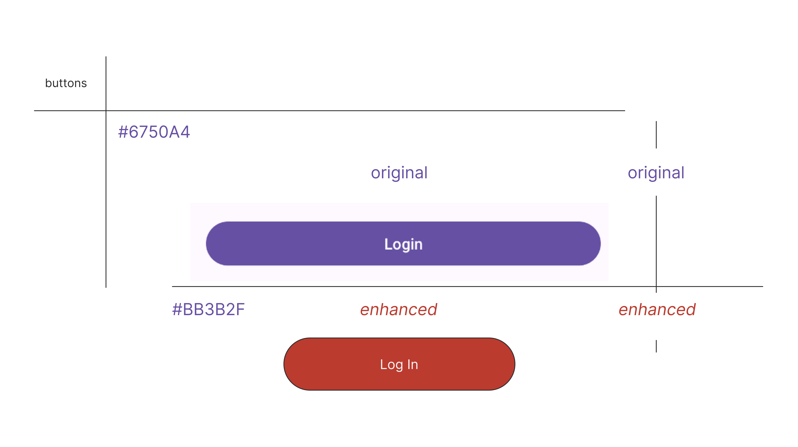
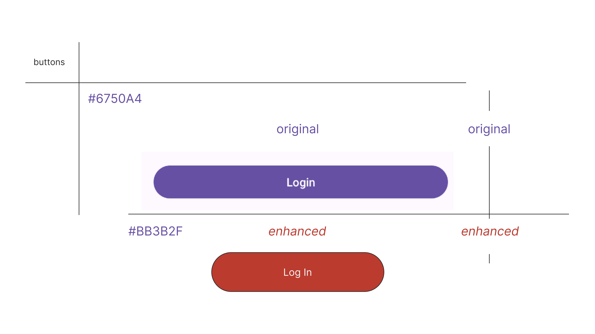

EvenTrack Artifact
Mobile App for Managing Events & Notifications
Code Review
This walkthrough highlights the Android logic, Firebase integration, and how permission handling and external testing methods were applied. It also demonstrates the use of SensorManager and activity lifecycle optimizations.
EvenTrack Code Review
Original Artifact
The original version of EvenTrack was a static prototype UI without login functionality or real-time event management. It served primarily to demonstrate layout ideas and screen transitions.

 

Initial UI Prototype
Enhancement
The application was rebuilt to include Firebase Auth, event storage in Firestore, SMS permission handling, and real-time updates. The design was refined using a dark mode theme and material design practices in Android Studio.

Functional Event Tracking App
Future Enhancements
Planned improvements include integrating push notifications with Firebase Cloud Messaging, adding calendar sync, and enabling event sharing between users. These features will make EvenTrack a powerful productivity tool.

Future Roadmap